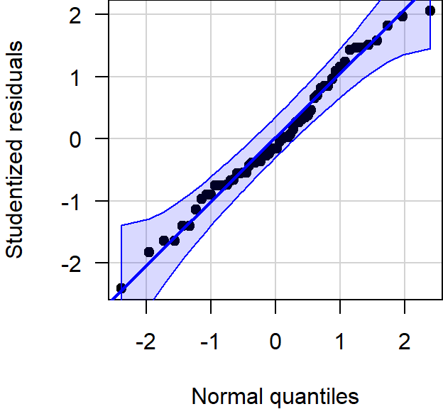
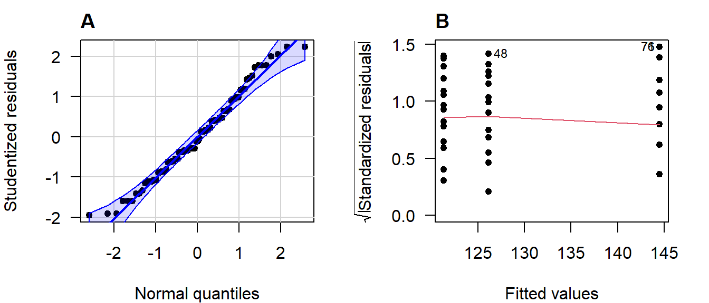

Tutorial 4 Two-Way & Multi-Way ANOVA
A method test to compare any number of means, from multiple categorical variables to see if they differ significantly. Observations are assumed to be independent, deviations from the group means are assumed to follow a normal distribution, and groups are assumed to have equal variance.
Summary
- Read the data into R ;
- Visualize the data;
- Fit an ANOVA:
- Perform visual diagnostics to look for deviations from the assumptions;
- Perform an omnibus test if the assumptions appear reasonable;
- Perform a post-hoc test if the omnibus test was significant;
- Report a conclusion;
- Incorporating this in scientific literature.
Download the template here and the required data set here .
4.1 Read the Data into R
I recommend saving data as comma-separated values (CSV). If you prefer reading data directly from Excel, have a look here.
Details
- Save the data in a folder;
- Open RStudio and create a new R markdown or Quarto file; (File > New File > R Markdown)
- Save your R markdown file to the same location as the data;
- Set working directory to source file location. (Session > Set Working Directory > To Source File Location)
DF <- read.csv("combination-of-groups.csv")Did that work? There are several ways to check:
str(DF)
summary(DF)
head(DF)Explanation of the output
str(DF)## 'data.frame': 90 obs. of 5 variables:
## $ SBP : num 122 121 119 118 122 ...
## $ treatment: chr "thiazide" "thiazide" "thiazide" "thiazide" ...
## $ smoking : chr "yes" "no" "no" "no" ...
## $ age : int 35 47 36 36 27 43 39 29 41 37 ...
## $ sex : chr "female" "male" "male" "male" ...This command shows the structure of the data. It is a data frame with \(n = 90\) observations of 5 variables. SBP and age are stored as integers (int), while treatment smoking, and sex are stored character vectors (chr).
summary(DF)## SBP treatment smoking age
## Min. :100.8 Length:90 Length:90 Min. :19.00
## 1st Qu.:122.0 Class :character Class :character 1st Qu.:31.00
## Median :128.9 Mode :character Mode :character Median :35.00
## Mean :131.2 Mean :34.52
## 3rd Qu.:141.4 3rd Qu.:38.00
## Max. :147.3 Max. :47.00
## sex
## Length:90
## Class :character
## Mode :character
##
##
## This function tries to give you some basic insight into the data, separately per column:
SBP:- The average is 131.5;
- The median is close to the mean, and the 1st and 3rd quartile are at a similar distance from the mean. These are both indications that the values are distributed symmetrically around the mean;
- The minimum is much closer to the mean than the maximum. This is an indication that the maximum value might be outlying.
treatment:- There are 90 observations;
- This variable is treated as a
charactervector.
smoking:- There are 90 observations;
- This variable is treated as a
charactervector.
age:- The average is 35.7;
- The median is close to the mean, and the 1st and 3rd quartile are at a similar distance from the mean. These are both indications that the values are distributed symmetrically around the mean;
- The maximum is far away from the rest of the values, while the minimum is not. This could be an indication that the maximum value is outlying.
sex:- There are 90 observations;
- This variable is treated as a
charactervector.
head(DF)## SBP treatment smoking age sex
## 1 121.9 thiazide yes 35 female
## 2 120.8 thiazide no 47 male
## 3 118.9 thiazide no 36 male
## 4 118.3 thiazide no 36 male
## 5 121.6 thiazide yes 27 female
## 6 145.0 thiazide yes 43 maleThis function simply shows the first 6 rows of the data. You can also print the last 6 with tail and change the number of rows printed by specifying n.
My output looks different
Then provided you did everything else correctly, the most likely reason is that your data was saved with a version of Excel where a comma is used as a decimal separator (e.g., the Dutch version). The solutions for this is simple, use read.csv2:
DF <- read.csv2("some-data-with-commas.csv")Common mistakes
- Remember to include the file extension (e.g., “combination-of-groups.csv”) when typing the file name.
- You cannot read Excel files (.xls, .xlsx) with this function. Instead, follow the guide here, or save your data as CSV.
- Don’t open the CSV file with Excel. You don’t need Excel or Google Sheets or any other program besides R and RStudio. If you have saved your data as CSV, you can close Excel.
The next step is to ensure categorical variables are read as factors. This will allow us to use generic functions like plot and summary in a more meaningful way.
Why not just use character?
A character vector is just strings of text, numbers and/or symbols. If you were to produce a summary, this happens:
summary(DF$treatment)## Length Class Mode
## 90 character characterIt tells us this object contains 60 values, and it is stored and treated as a string of text.
The generic plot function doesn’t even work at all:
plot(SBP ~ treatment, DF)Error in plot.window(...) : need finite 'xlim' values
In addition: Warning messages:
1: In xy.coords(x, y, xlabel, ylabel, log) : NAs introduced by coercion
2: In min(x) : no non-missing arguments to min; returning Inf
3: In max(x) : no non-missing arguments to max; returning -InfNow convert the variables to factors and see how that changes the output.
(Run the code below, then run summary(DF$treatment), or plot(DF$treatment) for example.)
DF$treatment <- factor(DF$treatment)
DF$smoking <- factor(DF$smoking)
DF$sex <- factor(DF$sex)Reordering a Factor
While it does not change any of the conclusions, it can help yourself and any readers if you put the groups in a logical order. For sex there is no logical order, but for treatment it would make sense to have the placebo first, as a reference to compare the other groups to.
To check the order of levels in a factor, use levels:
levels(DF$treatment)## [1] "CCB" "placebo" "thiazide"
My output is NULL
That means you forgot to convert your variable to a factor first:
levels(DF$treatment)## NULL# Solution
DF$treatment <- factor(DF$treatment)
levels(DF$treatment)## [1] "CCB" "placebo" "thiazide"
To change which treatment appears first, use relevel:
DF$treatment <- relevel(DF$treatment, "placebo")(Run levels(DF$treatment) again to see if it worked.)
Reordering multiple categories at once
If you want to change the order entirely, you can define the order manually as follows:
DF$treatment <- factor(DF$treatment, levels = c("placebo", "CCB", "thiazide"))Change the names of the categories
Careful, only use this if you know what you are doing. Check the order of labels first, using levels. It is easy to accidentally flip the labels of a factor and end up with nonsense.
If you want to rename the labels of a factor, for instance because you think the names are too long, you can do so as follows:
# Run this first, you have been warned
levels(DF$treatment)
# Change the names, taking into account the order of the labels above
DF$treatment <- factor(DF$treatment, labels = c("Ctrl", "CCB", "Thzd"))(Run levels(DF$treatment) again to see if it worked.)
4.2 Visualize the Data
In summary:
- Boxplots can be used as simple data exploration and to compare groups;
- If you have multiple variables, grouped boxplots can show combinations of groups;
- A violin plot is an alternative to a boxplot.
boxplot(SBP ~ smoking + treatment, DF)What to look for
Potential Outliers
A boxplot shows either of the following:
Figure 4.1: What is displayed in a boxplot in case all observations are within a certain distance from the box (A), or otherwise (B).
The interquartile range (IQR) is simply the size of the box. If all observations lie within \(1.5\times\) this range from the box, then the whiskers show the extremes of the data (fig. ?? A). Otherwise, the observations are drawn separately ?? B). The IQR is usually not shown in a boxplot, but is used internally to calculate the location of the whiskers and marked observations (if any).
Marked observations are not outliers
This is a common misconception. Though it can be an indication of outlyingness, a boxplot alone cannot tell you whether these observations will strongly affect your analysis:
- If you have a large enough sample size, you will find more extreme observations, which are eventually drawn outside the IQR. Try running:
boxplot(rnorm(1000)) - Skewed values (next section) will almost always show ‘outliers’ in the direction of skew, but these are unlikely to be outliers in the context of an appropriate model for skewed data.
- The \(1.5\times\) IQR rule is nothing special, it is merely convention. A boxplot is just a quick way to visualize numeric values.
Skew
Skew means the data-generating process follows a probability distribution that is not symmetric. In a boxplot, skew looks like this:

Figure 4.2: A boxplot of symmetric (A), right-skewed (B), and left-skewed values.
Skew is not necessarily a problem, unless it persists in the residuals of a model that assumes normally distributed errors. For an explanation of skew, see the video on probability distributions .
Differences Between Groups
A boxplot is not just a nice tool for yourself to inspect your data, but is also an effective tool to visually communicate the evidence for difference between groups:
Figure 4.3: A comparison of systolic blood pressure for different treatments and sex.
How to improve your plot
Some basic adjustments that improve any plot:
- Use informative axis labels, with unit of measurement if appropriate;
- Add an informative caption;
- Keep the numbers on the axes horizontal where possible;
- Remove unnecessary plot elements, like the box around the figure.
The changes to the code I made below can all be found in the help pages ?boxplot and ?par. I am also a big fan of the eaxis function from the package sfsmisc. The caption is added as a chunk option (i.e., ```{r, fig.cap = "..."}).
# Load a package for nice axes
library("sfsmisc")
# Change the margins (bottom, left, top, right)
par(mar = c(4, 4, 0, 0) + 0.1)
# Define the locations (helps discern between combinations of groups)
where <- c(1:2, 4:5, 7:8)
# Create the coordinate system
boxplot(SBP ~ smoking + treatment, DF, at = where, axes = FALSE,
pch = 19, cex = 0.5, boxwex = 0.25, staplewex = 0,
lwd = 1.5, lty = 1, ylim = c(100, 150), xlim = c(0.5, 12),
xlab = "Treatment", ylab = "Systolic blood pressure (mmHg)")
# Add axes
axis(1, c(1.5, 4.5, 7.5), levels(DF$treatment))
eaxis(2)
# Add a lightgrey background
polygon(x = c(-1, 9, 9, -1, -1), y = c(50, 50, 200, 200, 50), col = "grey95",
border = NA)
# Add a simple grid
abline(h = seq(50, 200, 10), col = "white", lwd = 1)
abline(h = seq(50, 200, 20), col = "white", lwd = 1.5)
# Define two colors (picked from colorbrewer2.org)
cols <- c("#fb9a99", "#a6cee3")
# Redraw the boxplots on top
boxplot(SBP ~ smoking + treatment, DF, at = where, axes = FALSE,
boxwex = 0.25, staplewex = 0, col = cols, add = TRUE,
pch = 19, cex = 0.5, lwd = 1.5, lty = 1)
# Add a legend
legend("topright",
legend = ifelse(levels(DF$smoking) == "yes", "smoking", "non-smoking"),
pch = 15, col = cols, bty = "n")
# Restore the default margins for subsequent plots
par(mar = c(5, 4, 4, 3) + 0.1)Figure 4.4: A comparison of systolic blood pressure for three groups.
From the plot you can conclude:
- Several observations are marked as potentially outlying;
- None of the groups appear skewed;
- Both the CCB and thiazide group have substantially lower blood pressure than the control, with thiazide appearing the lowest;
- There is no overall difference between smokers and non-smokers, but treatment appears to be most effective in non-smokers;
- The variance of all groups is similar, because the boxes are similarly sized. The only smaller box belongs to the smoking thiazide group.
This is just a sample, so whether the observed differences are significant, should be determined with a test.
Alternative: Violin plot
A more modern take on the boxplot is a violin plot. It combines a boxplot and a density plot. This type of visualization is richer in information than just a boxplot, but it is only meaningful if you have enough observations per group (e.g., >10):
library("vioplot") # install if missing
vioplot(SBP ~ treatment, DF)How to interpret a violin plot
Here is a breakdown of the components shown in a violin plot:

The density plot, if you are unfamiliar with it, is like a continuous version of a histogram. It shows which values are more and less likely in the sample.
4.3 Analyze the Data
Summary (code)
# Load packages used (install if missing)
require("car")
require("emmeans")
require("MASS")
# Fit the model
LM <- lm(SBP ~ smoking * treatment, DF)
# Perform visual diagnostics
par(mfrow = c(2, 2)) # Plot in a 2x2 grid
plot(LM, which = 1) # Residuals vs fitted
qqPlot(LM, reps = 1e4) # QQ-plot
plot(LM, which = 3) # Scale-location
plot(LM, which = 4) # Cook's distance
par(mfrow = c(1, 1)) # Restore the default
# Refit using robust linear regression (to account for heavy tails)
LMrobust <- rlm(SBP ~ smoking * treatment, DF)
# Perform an omnibus test
S <- summary(LMrobust)
# If the omnibus test is significant, perform a post-hoc
EMM <- emmeans(LM, specs = c("treatment", "smoking"))
pairs(EMM)
# Or treatment-vs-control style
EMM <- emmeans(LM, specs = trt.vs.ctrl ~ smoking * treatment)
# Visualize the post hoc (see the emmeans vignette)
plot(EMM, comparisons = TRUE)
Fit the Model
In the example, we are interested in the effect of smoking and treatment. In addition, we are interested whether the treatment effect differs for smokers and non-smokers. To fit a model with two variables and an interaction, use the following syntax:
LM <- lm(SBP ~ smoking * treatment, DF)The general notation is:
Outcome ~ GroupingVariable1 * GroupingVariable2, Data(with interaction);Outcome ~ GroupingVariable1 + GroupingVariable2, Data(without interaction).
How do I know if I should include an interaction?
XXXXXX — Insert figure of interaction vs no interaction —
If you are interested in overall differences between smokers and non-smokers, or between the treatment groups, and you are confident the effect of treatment does not differ by smoking status, then you should fit a model without interaction instead, using the + notation.
Why use a linear model (lm)?
(The short answer is that ANOVA is linear and I decided to use emmeans throughout the tutorials for consistency.)
Linear means that we can express the model as intercept and slope(s):
\[\text{intercept} + \text{slope} \times \text{explanatory variable}\]
Categorical explanatory variables, like treatment, can be represented by dummy variables :
\[ \begin{aligned} x_1 &= \begin{cases} 1 \; \text{if CCB} \\ 0 \; \text{otherwise} \end{cases} \\ \\ x_2 &= \begin{cases} 1 \; \text{if thiazide} \\ 0 \; \text{otherwise} \end{cases} \end{aligned} \] These variables are equal to \(1\) if the observation belongs to that group and \(0\) otherwise. Our example model then becomes:
\[\text{SBP} = \text{intercept} + \text{slope} \cdot x_1 + \text{slope} \cdot x_2 + \text{error}\]
That might look confusing at first, because this isn’t a slope in the everyday meaning of the word. But all that ‘slope’ means in statistics is the extent to which the outcome changes, if the explanatory variable increases by \(1\).
For example, if you belong to the thiazide group, then the equation becomes:
\[\text{SBP} = \text{intercept} + \text{slope} \cdot 0 + \text{slope} \cdot 1\]
If you belong to the control group, the equation becomes:
\[\text{SBP} = \text{intercept} + \text{slope} \cdot 0 + \text{slope} \cdot 0\]
Which is simply the value of the intercept.
Hence, comparing group means is the same as fitting a linear model with only dummy variables. This is useful for a number of reasons, but primarily:
- We can use the same notation for everything from \(t\)-test to ANCOVA;
- We can use
lm, which is supported by far more functions thanaov; - We can easily correct for multiple testing .
(The traditionalaov+TukeyHSDapproach does not correct for two-way or multi-way ANOVA.)
Perform Diagnostics
The calculation of confidence intervals and \(p\)-values is based on several assumptions. If these are not reasonable, conclusions drawn from the analysis are invalid.
Additionally, outliers can have a strong influence on the estimates and \(p\)-values, so you should always check and decide whether outlying observations are genuine, or outlying for reasons that warrant exclusion.
Checking assumptions and outlyingness can be done trough visual diagnostics .
require("car") # Install if missing
par(mfrow = c(2, 2)) # Plot in a 2x2 grid
plot(LM, which = 1) # Residuals vs fitted
qqPlot(LM, reps = 1e4) # QQ-plot
plot(LM, which = 3) # Scale-location
plot(LM, which = 4) # Cook's distance
par(mfrow = c(1, 1)) # Restore the defaultShow output
(For general advice on diagnostic plots, see the video .)

What to look for in general
Deviations from Normality
In a QQ-plot, you can check whether the residuals deviate problematically from a normal distribution. The straight line represents a theoretical normal distribution and the black dots show where the actual residuals fall. Since the values a sample will always deviate somewhat, a confidence band is drawn around the line to provide an indication of the severity of the non-normality.
Here are three examples of random values drawn from an actual, exact normal distribution:
Figure 4.5: Normal QQ-plots of residuals from simulated data that follows a an exact normal distribution.
Note how even in data drawn from an exact normal distribution, occasional observations outside the confidence bands are quite common. This is important to keep in mind when judging the severity of a violation.
A great write-up (with examples) on what patterns to look for can be found in this answer on CrossValidated . A quick summary of problematic patterns include:
- Gaps; (Lack of values within a certain range.)
- Bulging (concave or convex); (Usually an indication of skew.)
- S-shape; (Implying light- or heavy-tailedness.)
Here are three examples of problematic patterns: (confidence band hidden for clarity)

Figure 4.6: Normal QQ-plots of residuals displaying (A) gaps; (B) bulging; (C) S-shapedness .
Non-Constant Variance
In the residuals vs fitted plot, you can see whether the observations are more or less equally dispersed around their group means. The \(x\)-axis shows the value of the group means and the \(y\)-axis the deviation from the group mean.
Here are three examples of random values with equal group variance:

Figure 4.7: Residuals vs fitted plots of values drawn from a normal distribution with equal variance.
Important to note here is that small deviations will always be present, and a smoothing line will be drawn that is not useful for ANOVA (but will be used in linear regression).
(The smoothing line can be suppressed with add.smooth = FALSE.)
Examples of unequal variance in a residuals vs fitted plot:

Figure 4.8: Residuals vs fitted plots of values drawn from a normal distribution with unequal variance.
Careful, unequal sample size can give the false appearance of unequal variance in a residuals vs fitted plot:

Figure 4.9: Residuals vs fitted plots of values drawn from a normal distribution with equal variance, but different sample sizes.
This is why you should also look at the scale-location plot:

Figure 4.10: Scale location plots of values drawn from a normal distribution with equal variance, but different sample sizes.
The scale-location plot takes the residuals and performs a transformation that allows for a simple interpretation: Rather than looking at the dispersion in the black dots, you can look at the average. Higher variance means the red smoothing line is also higher.
As a rule of thumb, you should conclude non-constant variance from a scale-location plot if the smoothing line is more than \(0.5\) higher/lower than other groups, or there is a consistent trend up/down.
Examples of non-constant variance in a scale-location plot:
Figure 4.11: Scale-location plots of values drawn from a normal distribution with unequal variance.
Potential Outliers
The Cook’s distance can be used to assess outlyingness. This is a simple measure: Greater than \(0.5\) warrants further inspection and greater than \(1.0\) is statistically outlying.
Here are three examples of random normally distributed values without any apparent outliers:

Figure 4.12: Cook’s distance of values drawn from a normal distribution.
Here are three examples of outliers:
Figure 4.13: Cook’s distance of values drawn from a \(t\)-distribution. Due to the larger mass in the tails, the \(t\)-distribution is more likely to yield outlying values.
Why \(t\)-quantiles instead of normal?
(This is a bit technical and only important if, for example, a reviewer asks about it.)
In short, I recommend using this over a normal QQ-plot, because it reflects the general notion that minor deviations in the tails should be ignored.
You may have noticed that the example code here does not actually produce a normal QQ-plot, but instead a QQ-plot for a theoretical \(t\)-distribution. (Try: qqPlot(lm(rnorm(10) ~ 1)) and look at the \(x\)-axis label.)
A little digging in the qqPlot’s github repository shows what happens:
z <- if (distribution == 't') qt(P, df=res.df-1) else qnorm(P)(Here, z is the theoretical quantile on the \(x\)-axis of a QQ-plot.)
These quantiles are used to compute where the confidence band should be drawn. If you use qqPlot(LM), these are based on a \(t\)-distribution with degrees of freedom equal to the residual degrees of freedom of the model minus one. This is done to reflect the additional uncertainty from the limited sample size. As the sample size grows (and the model complexity remains constant), the two approaches grow closer. In practical terms, this allows for slightly wider bands near the tails, the smaller the sample size is, which is a desirable property, because the smaller the sample size, the harder it is to decide whether an observation is outlying.
Another important difference you may have noticed is that qqPlot(LM) yields a narrower confidence band than qqPlot(residuals(LM)). This actually has nothing to do with the \(t\)-distribution, but with the type of confidence band drawn when using qqPlot(LM): The default argument for qqPlot(residuals(LM)) is line = "quartiles", whereas qqPlot(LM) defaults to line = "robust". The latter provides simulation-based robust regression confidence bands, which are more sensitive to non-normality, while simultaneously being less prone to false positives.1
On a general note, these bands are (both) point-based 95% confidence, meaning that there is a large chance of at least one observation outside the bands, even if the values come from a theoretical normal distribution.
Significance tests for assumptions
All significance tests can produce false positives. Always judge the severity of any supposed problems with visual diagnostics.
In cases where you are not sure an assumption is violated, it is possible to conduct a test.
Normality
Deviations from conditional normality can be formally tested using a variety of tests, all of which have different sensitivities to different aspects of the normal probability distribution. Commonly used is the Shapiro–Wilks test, which is particularly sensitive to skew and light-tailedness.2
shapiro.test(residuals(LM))Show output
##
## Shapiro-Wilk normality test
##
## data: residuals(LM)
## W = 0.81801, p-value = 3.662e-09The residuals differ significantly from a theoretical normal distribution (\(p = 3.66 \cdot 10^{-9}\)), which is to be expected given the heavy-tailedness seen in the visual diagnostics. (We will deal with at the end of this section.)
This test cannot demonstrate the values are normally distributed
This is a common misconception. If \(p > 0.05\), all we found is a lack of evidence against normality. But for these values to be normally distributed, they would need to range all the way from \(-\infty\) to \(\infty\), which is obviously not realistic for blood pressure.
Also see: Why do statisticians say a non-significant result means “you can’t reject the null” as opposed to accepting the null hypothesis?
Constant Variance
A robust test for non-constant variance that is not sensitive to other common issues like outliers and non-normality is the Breusch–Pagan test:
require("lmtest") # Install if missing
bptest(LM)Show output
##
## studentized Breusch-Pagan test
##
## data: LM
## BP = 4.1471, df = 5, p-value = 0.5284As expected from the visual diagnostics, group variances are not significantly different (\(p = 0.528\)).
This does not demonstrate the groups have equal variance
This is a common misconception. All we found is a lack of evidence against equal variance.
Also see: Why do statisticians say a non-significant result means “you can’t reject the null” as opposed to accepting the null hypothesis?
Outliers
A test for outlyingness is included in the car package:
require("car")
outlierTest(LM)Show output
## rstudent unadjusted p-value Bonferroni p
## 6 6.134227 2.7859e-08 2.5073e-06
## 13 -4.899182 4.6931e-06 4.2238e-04The test looks at every individual residual and whether it might be outlying. That of course, poses a major multiple testing issue, so the resulting \(p\)-values are adjusted for this. When looking for outliyngness, always check the adjusted \(p\)-value.
In this case, the test is significant for observations 6 and 13. These are unlikely to be outliers, but rather the result of the heavy-tailedness (supported by their low Cook’s distance in the diagnostic plots).
The car package contains another set of residual plots specifically to assess outlyingness:
influenceIndexPlot(LM)Show output

These show, in order:
- The Cook’s distance; (Greater than \(0.5\) is noteworthy, greater than \(1.0\) is outlying.)
- The studentized residuals; (Divided by their standard deviation for standardized interpretation.)
- \(P\)-values for outlyingess; (Corrected for multiple testing.)
- The hat-values. (A measure of relative influence.)
Observations 6 and 13 are again pointed out, but do not have substantial influence when looking at the Cook’s distance or hat-values.
What to do if an assumption is violated?
Below are some options, in the order I would consider them:
- Using a model that makes different distributional assumptions (e.g., GLM, GAM);
- Finding an appropriate transformation of the outcome that can also be justified from a biological point of view;
- Using robust linear regression to account for non-constant variance, or give less weight to outliyng observations (e.g., with
rlmfrom theMASSpackage); - Using a test that makes no distributional assumptions. (For example, the Kruskal–Wallis test (
kruskal.test), followed by pairwise Wilcoxon tests (wilcox.test) for individual differences, with an appropriate multiple testing correction applied (p.adjust).)
In the example here, the residuals are heavy-tailed. One way to deal with this is by giving less weight to observations further away from the model. This is called robust regression and can be performed as follows:
require("MASS")
LMrobust <- rlm(SBP ~ smoking * treatment, DF)To see how each observation was weighted, you can run the following:
LMrobust$wShow output
## [1] 1.0000000 1.0000000 1.0000000 1.0000000 1.0000000 0.1286223 1.0000000
## [8] 1.0000000 1.0000000 1.0000000 1.0000000 1.0000000 0.1546261 1.0000000
## [15] 1.0000000 1.0000000 1.0000000 1.0000000 1.0000000 1.0000000 1.0000000
## [22] 1.0000000 0.8293050 1.0000000 0.3857447 1.0000000 1.0000000 0.9733381
## [29] 1.0000000 0.9391029 0.8798398 1.0000000 1.0000000 1.0000000 1.0000000
## [36] 0.6430793 1.0000000 1.0000000 1.0000000 1.0000000 1.0000000 1.0000000
## [43] 0.5704144 1.0000000 1.0000000 1.0000000 0.7664155 1.0000000 1.0000000
## [50] 0.9548645 0.2224012 1.0000000 1.0000000 1.0000000 0.4802480 1.0000000
## [57] 1.0000000 1.0000000 1.0000000 1.0000000 1.0000000 1.0000000 0.9823628
## [64] 0.5903509 0.7303982 1.0000000 1.0000000 1.0000000 1.0000000 1.0000000
## [71] 1.0000000 1.0000000 1.0000000 1.0000000 1.0000000 1.0000000 0.2913689
## [78] 1.0000000 1.0000000 1.0000000 1.0000000 0.7001059 1.0000000 1.0000000
## [85] 1.0000000 1.0000000 1.0000000 0.7001059 1.0000000 1.0000000Perhaps more insightful would be to show the weights used with a color scheme:
w <- LMrobust$w
qqPlot(resid(LMrobust), col = rgb(1 - w, 0, 0))Figure 4.14: QQ-plot of the residuals of a robust linear model. The more red an observation is, the lower its weight.
Clearly, the observations outside the confidence band now have less influence on the estimates.
Dealing with Potential Outliers
In general, outliers should not be removed from the data, barring some exceptions.
The following are valid reasons for exclusion:
- The observation is clearly an unrealistic value;
(For example, a blood pressure of “2000 mmHg” due to a misplaced decimal separator.) - The cause of outlyingness can be traced back, invalidating the observation;
(For example, because the blood pressure monitor was placed incorrectly.) - The observation differs in another way from the rest, invalidating comparisons.
(For example, this person tested positive for COVID-19 and all others did not.)
The following are insufficient reasons for exclusion:
- The observation stands out in the diagnostic plots;
- The observation has a high Cook’s distance;
- An outlier test showed the value was significantly outlying.
These are all measures that assume your model is right, but the opposite could very well be the case: The fact that there are ‘outliers’ is often an indication the proposed model is wrong.
In our example, there are no evident outliers. For an example of dealing with outliers, see the previous chapter.
My data set has many outliers
This is more often than not an indication that the assumptions of the model are not reasonable in the first place: Perhaps the data-generating process produced skewed values, or has far heavier tails than the normal distribution does. Perhaps there is an error in how the data are collected, or maybe your data were not read correctly by the software.
Simple removal is at best a questionable research practice and at worst plain falsification. Unless you can trace back the origin of the outliers, consider consulting a statistician.
Perform an Omnibus Test
To print a classic ANOVA table, you would usually run the following:
summary.aov(LM)For the robust linear model, you will notice that this function is not available (it will return an error). We can still perform an omnibus test using the Anova function in the car package:
require("car")
Anova(LMrobust)Show output
## Analysis of Deviance Table (Type II tests)
##
## Response: SBP
## Df F Pr(>F)
## smoking 1 34.070 9.694e-08 ***
## treatment 2 516.252 < 2.2e-16 ***
## smoking:treatment 2 33.614 1.885e-11 ***
## Residuals 84
## ---
## Signif. codes: 0 '***' 0.001 '**' 0.01 '*' 0.05 '.' 0.1 ' ' 1We conclude that all included variables in the model—including the interaction term—explain a significant amount of deviance (a generalized form of variance used because this is not an ordinary linear model). Due to the principle of marginality, you cannot conclude a difference in group means between smokers/non-smokers, nor between the different treatments. We can only conclude there is a difference among group combinations.
To find out how the group combinations differ, a post hoc can be performed.
Perform a Post Hoc Analysis
If the omnibus test is not significant, skip this section.
After concluding that there is a difference among means, a post hoc can be used to compare individual groups and determine which groups differ. If you simply want to compare all groups with all other groups, you can do so like this:
require("emmeans")
EMM <- emmeans(LMrobust, specs = c("smoking", "treatment"))
pairs(EMM)Show output
## contrast estimate SE df z.ratio p.value
## no placebo - yes placebo -0.0904 0.976 NA -0.093 1.0000
## no placebo - no CCB 17.3163 0.943 NA 18.364 <.0001
## no placebo - yes CCB 7.4931 0.976 NA 7.677 <.0001
## no placebo - no thiazide 21.9711 0.943 NA 23.300 <.0001
## no placebo - yes thiazide 22.0168 0.976 NA 22.557 <.0001
## yes placebo - no CCB 17.4067 0.976 NA 17.834 <.0001
## yes placebo - yes CCB 7.5835 1.008 NA 7.523 <.0001
## yes placebo - no thiazide 22.0615 0.976 NA 22.603 <.0001
## yes placebo - yes thiazide 22.1073 1.008 NA 21.930 <.0001
## no CCB - yes CCB -9.8232 0.976 NA -10.064 <.0001
## no CCB - no thiazide 4.6548 0.943 NA 4.936 <.0001
## no CCB - yes thiazide 4.7006 0.976 NA 4.816 <.0001
## yes CCB - no thiazide 14.4780 0.976 NA 14.833 <.0001
## yes CCB - yes thiazide 14.5237 1.008 NA 14.407 <.0001
## no thiazide - yes thiazide 0.0457 0.976 NA 0.047 1.0000
##
## P value adjustment: tukey method for comparing a family of 6 estimatesAll groups differ significantly from each other (\(p < 0.0001\)), with thiazide appearing most effective. These \(p\)-values are already corrected for multiple testing.
If you want to obtain the actual, non-discretized \(p\)-values, you can use as.data.frame:
as.data.frame(pairs(EMM))## contrast estimate SE df z.ratio
## 1 no placebo - yes placebo -0.09043139 0.9760581 NA -0.09264959
## 2 no placebo - no CCB 17.31627045 0.9429617 NA 18.36370486
## 3 no placebo - yes CCB 7.49308818 0.9760581 NA 7.67688749
## 4 no placebo - no thiazide 21.97111000 0.9429617 NA 23.30010846
## 5 no placebo - yes thiazide 22.01682750 0.9760581 NA 22.55688223
## 6 yes placebo - no CCB 17.40670184 0.9760581 NA 17.83367397
## 7 yes placebo - yes CCB 7.58351957 1.0080685 NA 7.52282194
## 8 yes placebo - no thiazide 22.06154139 0.9760581 NA 22.60269292
## 9 yes placebo - yes thiazide 22.10725888 1.0080685 NA 21.93031489
## 10 no CCB - yes CCB -9.82318227 0.9760581 NA -10.06413688
## 11 no CCB - no thiazide 4.65483955 0.9429617 NA 4.93640359
## 12 no CCB - yes thiazide 4.70055705 0.9760581 NA 4.81585786
## 13 yes CCB - no thiazide 14.47802182 0.9760581 NA 14.83315583
## 14 yes CCB - yes thiazide 14.52373931 1.0080685 NA 14.40749295
## 15 no thiazide - yes thiazide 0.04571749 0.9760581 NA 0.04683891
## p.value
## 1 9.999990e-01
## 2 0.000000e+00
## 3 2.805534e-13
## 4 0.000000e+00
## 5 0.000000e+00
## 6 0.000000e+00
## 7 8.416601e-13
## 8 0.000000e+00
## 9 0.000000e+00
## 10 6.639134e-14
## 11 1.178773e-05
## 12 2.164683e-05
## 13 0.000000e+00
## 14 0.000000e+00
## 15 1.000000e+00
Since this incurs a substantial multiple testing problem, it is good practice to limit the comparisons to only those strictly necessary to answer the research question.
Treatment-vs-control style comparison
In the example used so far, we could have chosen to only compare the treatments to the control group (and not to each other). The package emmeans has a built-in argument to support this option:
EMM <- emmeans(LM, specs = trt.vs.ctrl ~ smoking * treatment)
as.data.frame(EMM$contrasts) # as.data.frame prevents roundingShow output
## contrast estimate SE df t.ratio p.value
## 1 yes placebo - no placebo 0.4526786 1.657653 84 0.2730841 9.902765e-01
## 2 no CCB - no placebo -16.9500000 1.601445 84 -10.5841922 1.265816e-10
## 3 yes CCB - no placebo -7.9116071 1.657653 84 -4.7727767 3.731038e-05
## 4 no thiazide - no placebo -22.5812500 1.601445 84 -14.1005481 1.265612e-10
## 5 yes thiazide - no placebo -19.7616071 1.657653 84 -11.9214385 1.265668e-10Custom comparisons
Only use this if you have a priori reasons to exclude certain comparisons. You cannot first perform all comparisons and then decide which comparisons to keep. This is a form of \(p\)-hacking.
If your research question can be answered satisfactorily with a specific set of comparisons, you can do so by creating custom contrasts. This is beyond the scope of this tutorial, but well documented in the emmeans vignette .
Obtaining confidence intervals for group means
Comparisons show you the estimated differences. But what if you wanted to include confidence intervals for the estimated group means (a common request by reviewers)? You can obtain those by printing the object we just created:
as.data.frame(EMM) # as.data.frame prevents rounding## smoking treatment emmean SE df lower.CL upper.CL
## 1 no placebo 142.4187 1.132393 84 140.1669 144.6706
## 2 yes placebo 142.8714 1.210579 84 140.4641 145.2788
## 3 no CCB 125.4687 1.132393 84 123.2169 127.7206
## 4 yes CCB 134.5071 1.210579 84 132.0998 136.9145
## 5 no thiazide 119.8375 1.132393 84 117.5856 122.0894
## 6 yes thiazide 122.6571 1.210579 84 120.2498 125.0645The confidence intervals are:
- Placebo: 143.1–145.9
- CCB: 124.7–127.6
- Thiazide: 119.9–122.8
It is also possible to plot the confidence intervals:
plot(EMM, xlab = "Systolic blood pressure (mmHg)")
4.4 Correctly Phrase the Results
This chapter is a work in progress. This part has not been written yet, it is a copy of chapter 3.
If the \(p\)-value of the omnibus test is less than the chosen level of significance
(This is the case in the example.)
While you can technically still summarize three comparisons in writing, it is right at the border of what should be put in a table instead, and referred to in brief. Generally, for post hoc analyses I recommend showing the average differences, confidence intervals and \(p\)-values in a table and/or figure. However, this section is meant to help you phrase results, so examples are provided regardless.
Examples of precise language:
- Systolic blood pressure differed significantly by type of treatment (\(p < 2 \cdot 10^{-16}\)), with CCB and thiazide resulting in 18.3 and 23.1 mmHg lower blood pressure on average, respectively (CCB: \(p = 2.59 \cdot 10^{-10}\), thiazide: \(p = 2.59 \cdot 10^{-10}\));
- The thiazide group had significantly lower systolic blood pressure than CCB (\(\hat{\beta} = 4.8\) mmHg, \(p = 3.48 \cdot 10^{-5}\));
- Thiazide resulted in 4.8 mmHg lower systolic blood pressure on average (95% CI: 2.3–7.3).
Examples of incorrect, incomplete, or imprecise language:
- The alternative hypothesis was true // The null-hypothesis was false;
- The difference was significant (\(p < 0.05\));
- The treatments outperform the control.
Why paste tense?
The results of a single experiment, no matter how convincing, can never prove something to be true. The results were observed, and in this one experiment, the treatments outperformed the control.
Use present tense only for statements that have been demonstrated repeatedly, are generally agreed upon, or are easily observable, e.g.:
- Smoking causes cancer;
- Current climate-change is mainly caused by human activities;
- Most people use smartphones nowadays.
If the \(p\)-values of the omnibus test is greater than the chosen level of significance
Examples of precise language:
- Systolic blood pressure did not differ significantly by type of treatment (\(p = \dots\));
- There is insufficient evidence to conclude either treatment worked (\(p = \dots\));
- There was a trend towards lower blood pressure on either treatment, but the differences were not significant (\(p = \dots\)).
Examples of incorrect, incomplete, or imprecise language:
- The treatments did not work;
- There was no difference (\(p < 0.05\));
- We accept the null-hypothesis.
Why can’t I say I accepted the null-hypothesis?
This is imprecise language because it distorts the order of null-hypothesis significance testing. Every tests starts with pretending the null-hypothesis is true, and then considering how rare a result this would be. You did not accept the null-hypothesis because of the \(p\)-value, but rather, you started by taking on the null-hypothesis to even compute that \(p\)-value.
If the omnibus test was insignificant, this is where the analysis ends. Do not include a post hoc, as that could be considered a form of fishing.
4.5 Incorporating This in a Paper
This chapter is a work in progress. This part has not been written yet, it is a copy of chapter 3.
Here you can find examples of how to justify the methods used, explain the results found and write a discussion. This is meant to show you what belongs where, and what level of detail is common in scientific literature.
Remember to use your own words—paraphrase to avoid plagiarism.
Methods
(In this section, you should describe the data collection and analysis to an extent that a fellow expert could reproduce your study.)
A total of \(n = 90\) Dutch individuals with clinically diagnosed hypertension were selected for the study. Inclusion criteria included: Minimum blood pressure of 140/90 mmHg, or an average of 135/85 mmHg at home; Primary hypertension; No evidence of other disease within 1 month of starting treatment. Written informed consent was obtained from all individuals and this study was approved by the ethical committee of Example institute under approval number 123456789. Individuals were randomly assigned to either a calcium channel blocker (CCB), thiazide, or an appropriate placebo. A summary of patient characteristics is provided in table ….
Statistical analyses were conducted in R, version 4.2.1, using the RStudio interface.3,4 Differences in group means were assessed with a one-way ANOVA. A post hoc was conducted with the emmeans package, using the Tukey method to adjust for multiple testing.5 Approximate conditional normality was assessed through normal quantile-quantile plots, using the car package,1 and constant variance with a scale-location plot.
Note:
- Check your R version number with
version; - Justify the model used; (Are the assumptions of ANOVA reasonable; What did you do to assess this?)
- You should cite any packages used to perform analyses, generate tables or figures that made it into the paper, e.g.;
- Normal quantile-quantile plots were generated with the
carpackage.1
- Normal quantile-quantile plots were generated with the
- You should not cite packages used only internally, e.g.:
- We used
readxlto enter the data in R.6
- We used
Results
(In this section you should mention the results without giving any interpretation yet.)
For general advice on phrasing, see: Correctly Phrase the Results. In this section, you should include your boxplot and explain in brief what the outcome of the ANOVA and (if applicable) post hoc was. For example:
Systolic blood pressure differed significantly between treatment groups (\(F = 283.6\), \(p < 2 \cdot 10^{-16}\)), with both treatments resulting in significantly lower systolic blood pressure (table 4.1). Diagnostic plots revealed no problematic deviations from normality and constant variance (Supplementary Figure S…). A single outlying value for systolic blood pressure was omitted from the analysis due to the individual’s age far exceeding that of all other participants. Excluding this observation did not affect which null-hypotheses were rejected.
It is very common to see boxplots with significance stars, but the interpretation of these stars is not consistent and you should mention the actual, non-discretized \(p\)-value at least somewhere in the results.
The post hoc can be presented as follows: (In the example, treatment-vs-control style.)
## NOTE: Results may be misleading due to involvement in interactions| Comparison | Estimate | SE | df | \(t\)-value | \(p\)-value |
|---|---|---|---|---|---|
| CCB - placebo | \(-12.66\) | \(1.17\) | \(84\) | \(-10.80\) | \(7.91 \cdot 10^{-11}\) |
| thiazide - placebo | \(-21.40\) | \(1.17\) | \(84\) | \(-18.26\) | \(7.91 \cdot 10^{-11}\) |
How do you create a table like that in R?
By going through the pain of learning regular expressions.
Here is the code I used:
require("knitr")
digits <- 2
# Take the output you want to create a table of
M <- as.data.frame(EMM$contrasts)
# Add some column names
colnames(M) <- c("Comparison", "Estimate", "SE", "df", "$t$-value", "$p$-value")
# Take all numeric values
x <- unlist(M[, -1])
# Convert them to...
x <- ifelse(
# ...scientific notation if less than 0.01
abs(x) < 0.01,
formatC(x, format = "e", digits = digits),
ifelse(
# ...integer if equal to its rounded value
x == round(x),
formatC(x, format = "d"),
# ...a 'regular' number otherwise
formatC(x, format = "f", digits = digits)
)
)
# Replace e-notation by nicely formatted scientific notation (positive numbers)
x[grepl("e\\+", x)] <- paste0(
sub("e\\+", " \\\\cdot 10^{", x[grepl("e\\+", x)]), "}"
)
# Replace e-notation by nicely formatted scientific notation (negative numbers)
x[grepl("e\\-", x)] <- paste0(
sub("e\\-", " \\\\cdot 10^{-", x[grepl("e\\-", x)]), "}"
)
# Remove leading zeros (for example "10^{03}" --> "10^{3}")
x <- sub("\\{0", "\\{", x)
# Remove leading zeros (for example "10^{-03}" --> "10^{-3}")
x <- sub("\\{-0", "\\{-", x)
# Enclose the resulting strings in "$" so they will be rendered as math
x <- paste0("$", x, "$")
M[, -1] <- x
# Print the result as a table (use escape = FALSE to render math correctly)
caption <- "Post hoc comparison with Tukey correction for multiple testing."
kable(M, escape = FALSE, caption = caption)The number of decimal points can be controlled with digits at the top.
Discussion
(In this section, you should not mention results, but the conclusions based on those results.)
If the test was significant and the difference large enough to be biologically relevant:
- Consistent with existing literature, both thiazide and CCB appear to be effective at reducing blood pressure in young to middle-aged chronic hypertension patients;
- A severe limitation of this comparison is the lack of a baseline measurement.\(^\dagger\)
- (Overclaiming) We have demonstrated that thiazide and CCB are effective at reducing systolic blood pressure in chronic hypertension patients.
- (Overgeneralizing) Thiazide and CCB appear to be effective at reducing blood pressure.
\(^\dagger\): For data with a baseline measurement, you should not use ANOVA, but a mixed model, because the observations are no longer independent.
If the test was insignificant or the difference too small to be biologically relevant:
- (If the study was sufficiently powerful) Despite a fairly large sample size, we were unable to demonstrate a difference in systolic blood pressure. Hence, thiazide and CCB do not appear to be effective at reducing blood pressure in young to middle-aged chronic hypertension patients.
- (If the study was underpowered) We were unable to demonstrate a difference in systolic blood pressure, though this could be due to the limited sample size.
- (Appeal to ignorance) We have demonstrated the treatments to be ineffective.
Why can’t I conclude there is no difference?
This is an inherent limitation of the \(p\)-value. Under the null-hypothesis, any \(p\)-value is as likely as any other (uniformity). Therefore, even if the \(p\)-value is very large, this cannot be interpreted as evidence for the null-hypothesis.
For example, a \(p\)-value of \(0.20\) is just as common a result as \(0.80\) when the null-hypothesis is correct. The \(p\)-value can only be used as evidence against the null-hypothesis (when it is small).
If you want to perform a test to find out whether the null-hypothesis is correct, what you are looking for is called an equivalence test. For \(t\)-tests, this can be implemented easily through TOST. An omnibus equivalence test can be constructed in a similar manner, by testing whether the \(F\)-value is close enough to \(1\).
Generating citations
Any packages used in analysis should be cited in the methods section. The citations used here can be easily obtained as follows (note that this requires the packages to be installed):
citation() # Use this to cite R
RStudio.Version() # Use this to cite RStudio
citation("car") # Use this to cite a package (here: car)You can add these entries to a reference manager (e.g., Zotero), or keep a BibTeX file yourself, as shown here.
Supplementary
(The following is not usually found in the main text, but can be included as supplementary material.)
Including diagnostic plots can be an effective way to convince the reader you considered the assumptions of the test or model used. It offers transparency and allows readers to judge for themselves whether they agree with your assessments and model choice.

Figure 4.15: (A) Normal quantile-quantile plot of the studentized residuals; (B) Scale-location plot.
If you include any supplementary material, you should refer to it in the main text.